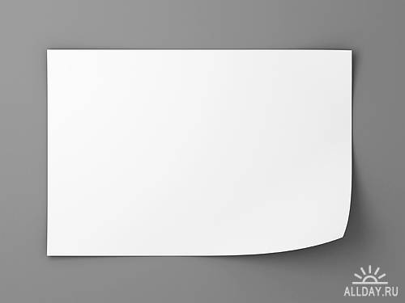

|  |
Take a sheet of paper and put it in front of you so, that you can draw in a convenient way |
|
Take one H-pencil and an eraser |
|
|
Tilt you web-camera, so you can easily see what's going on the computer screen, and at the same time the paper should be fully catched by the web-camera |